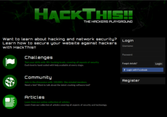
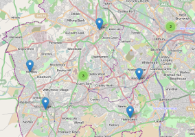

Hello I am Luke Ward, welcome to my life
I like to make things for the web and experiment with new technologiesWebsites
-

HackThis!!
A handbuilt security community. Offering 40+ levels, forum, user profiles, messaging and a whole lot more. The site now has over 180,000 registered users. The new version of the site is heavily built on object-orientated PHP combined with MySQL triggers and stored procedures. The entire site is fully responsive and features a Socket.io based feed and notification system.
- OO-PHP
- MySQL
- CSS3 (SASS)
- HTML5
- JQuery
- Node.js
-
BBC News
Between my 2nd and 3rd year at university I had an industrial year which I spent with BBC News Specials. While at the BBC I built a wide range of features and interactive content for the BBC News website. Working closely with journalists and designers to tight deadlines.
Selection of work: Dive the Mariana Trench, Build a bionic body, Explore the Jubilee Pageant, Build a bionic body, Faces of the Titanic
- HTML
- CSS
- JQuery
Mobile
-

MapWars
For my final year dissertation I built a location-aware multiplater real time stratergy game. The core concept revoloved around the users location being used to position the player within the virtual world. They could then only control their units within a given range of that location. This forced players to move around the real world to access and unlock new places.
Status: Under development
- Android
- GeoLocation
- Networking
- Python
- SQLite
Lab
-
favcounter
A small JS library to add a number overlay to a pages favicon.
- Javascript
- Canvas
-
NexBot - A Node.js IRC bot
NexBot is a modular IRC bot written in Node.js for HackThis!! It features a number of modules including search+replace, issue tracker and hooks to Grooveshark, Last.fm, Google APIs.
- Node.js
- REST
-

isSpoons
A small data mining and visulisation experiment. As an avid Wetherspoons visitor I wanted to get the location of all the restuarants and place them on a map for easy navigation. Development has not gone very far but 99% of their resturants are now available on the map but the interaction is lacking.
- Scraping
- GeoLocation